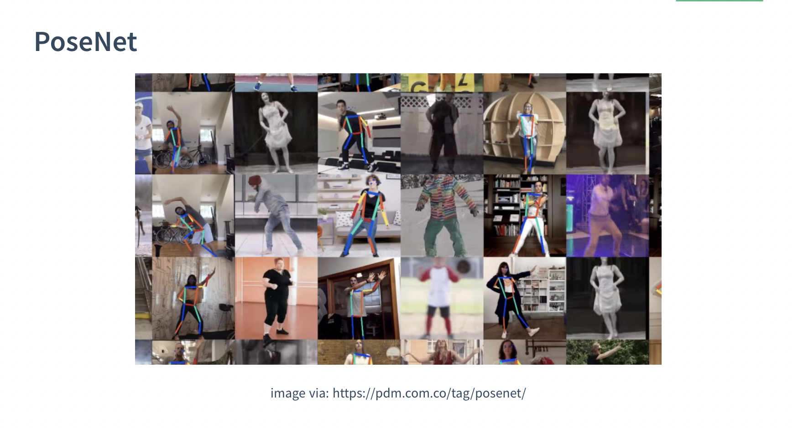
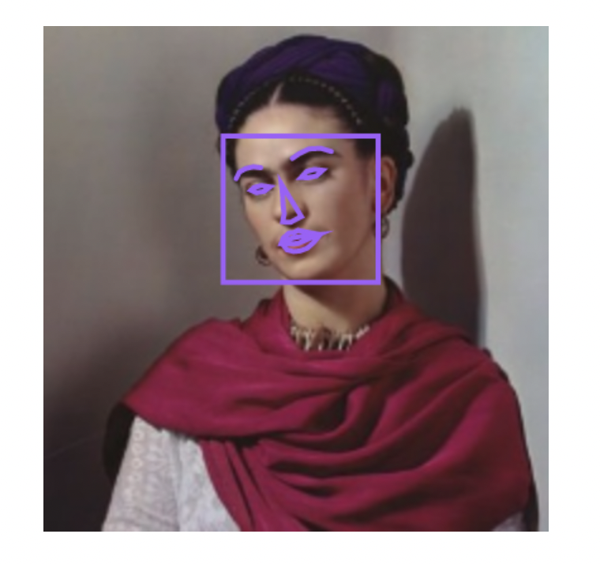
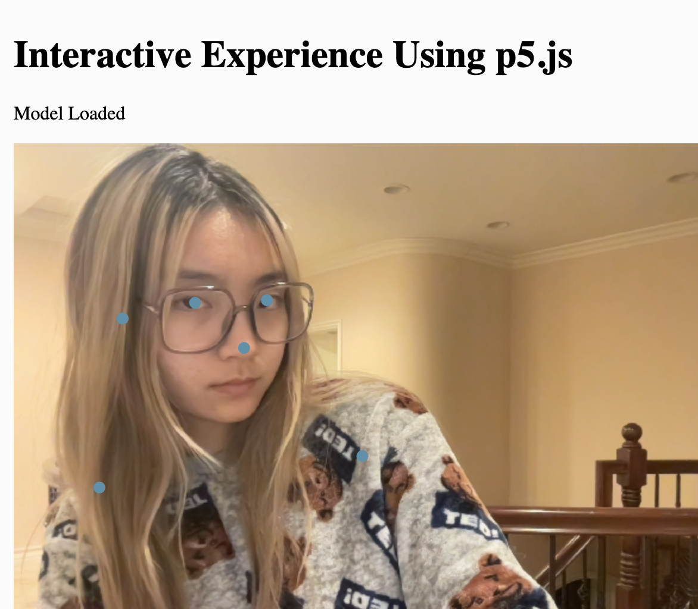
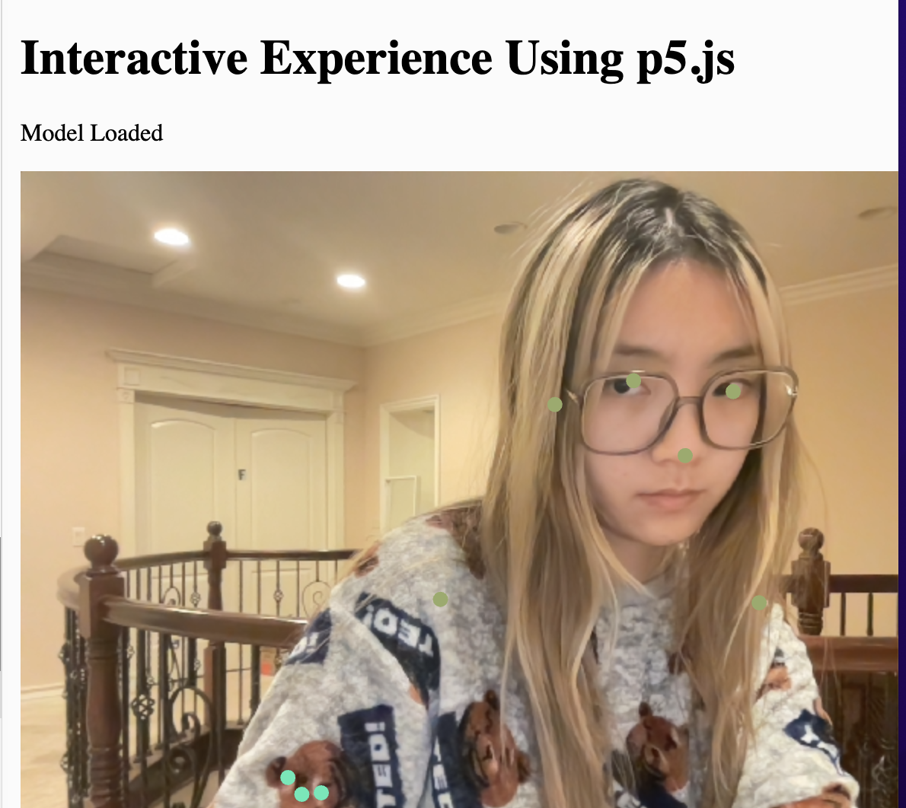
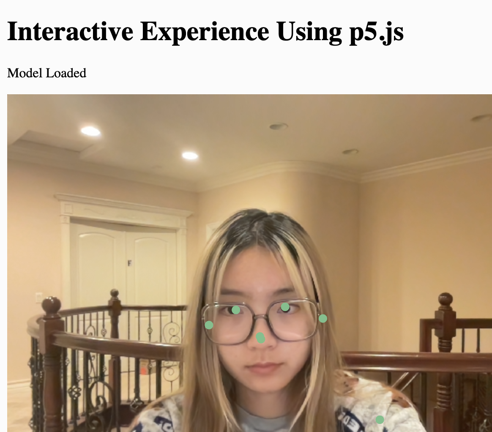
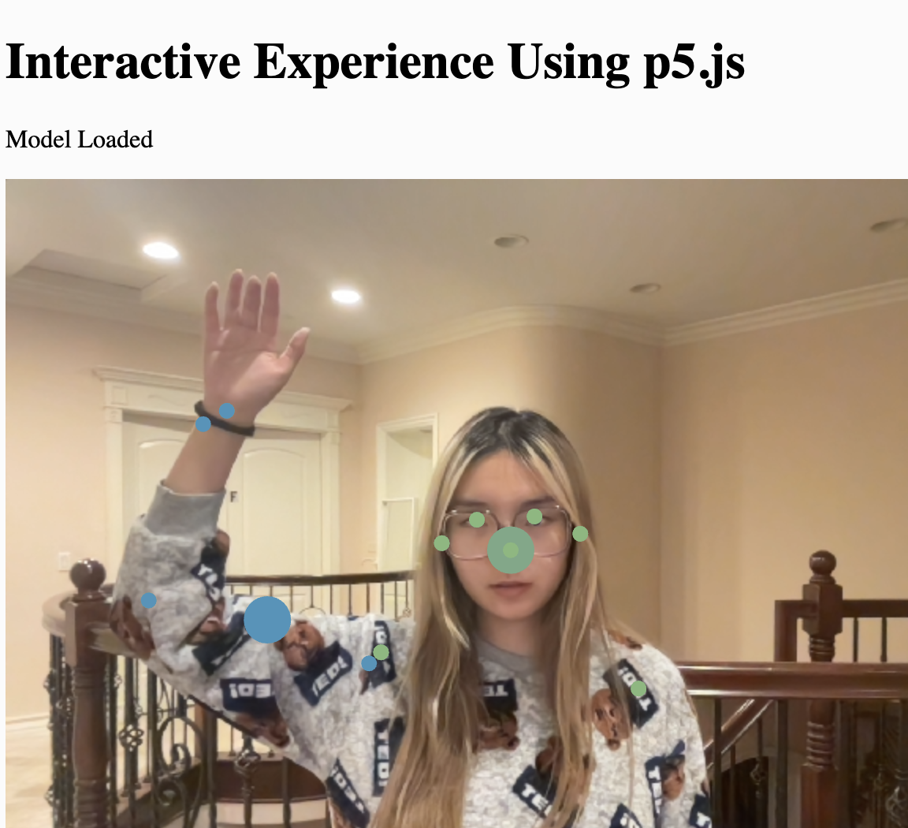
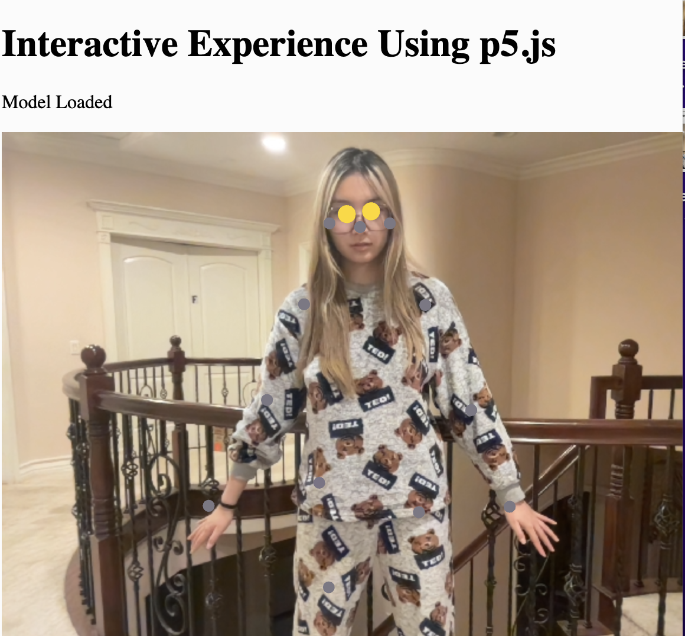

Week9 Assignment--Formulate the proposal for an interactive experience
Reference & Inspiration


First, I wanted to combine PoseNet and color to interact with people, so I referred to the examples in ML5.js
Color Part



In the color change part, when you are in different positions, the color of the dots on your body will change.
Motion Capture Part


In the motion capture part, the first interaction, when you raise your hand ( above your nose), the dot on the nose will become larger. The second interaction, when you are far away from the camera and can see the legs (the knees appear), the dots on the eyes will flash yellow.